Amazon WorkSpaces
Amazon WorkSpaces Personalのディレクトリ登録、利用者管理、作成、接続、グループポリシー、復旧操作をまとめる
PCoIPからDCV（WSP）へのプロトコル変更を含む構築・運用手順を整理する
2026年7月31日以降、PCoIPベースのWorkSpaces Personalは新規顧客へ提供されない
2027年10月31日以降は利用できないため、新規構築はDCV（WSP）を標準とし、既存環境は移行を計画する
仕様
| 区分 | 内容 |
|---|---|
| 基盤 | VPC、Public / Private Subnet、NAT Gateway、VPC Peering、Route Table、Security Group |
| ディレクトリ | AWS Managed Microsoft AD、AD Connector、WorkSpacesディレクトリ登録 |
| WorkSpaces | WorkSpaces Personal、ユーザー選択、バンドル選択、実行モード、WorkSpace起動、クライアント接続、Web Access |
| 運用 | Web Access、グループポリシー、復元、再構築、移行、プロトコル変更 |
本ページのAWS Managed Microsoft ADによる利用者管理手順は、Amazon WorkSpaces Workshopの実施内容を基に整理する
ストリーミングプロトコルの選定
WorkSpaces PersonalはDCV（WSP）とPCoIPをサポートする
PCoIPは終了予定のため新規構築はDCVを標準とし、既存環境は端末、ネットワーク、周辺機器を検証して移行する
| 観点 | DCV (WSP) | PCoIP |
|---|---|---|
| 設計方針 | 新規構築の標準 AWSの新機能開発はDCVに集中しており、既存PCoIP環境の移行先となる |
既存環境の移行計画が必要 新規設計の選択肢にはしない |
| ネットワークと認証 | 高い遅延・パケット損失への耐性が必要な利用者、スマートカード、Web カメラ、WebAuthn 認証器の利用要件に適する | 既存の PCoIP クライアントや端末との互換性を優先する場合に確認する |
| OS・アクセス方式 | Windows Server 2022 の Web Access、Ubuntu、Windows 11 BYOL、Graphics.g4dn / GraphicsPro.g4dn の利用要件を満たす | iPad、Android、Linux クライアント、Teradici PCoIP Zero Client、既存の Graphics / GraphicsPro バンドルなどの要件を個別に確認する |
DCVとPCoIPでは、対応クライアント、OS、GPUバンドル、周辺機器のサポート範囲が異なる
既存PCoIPを移行する場合は、利用者の端末、ネットワーク経路、印刷、周辺機器、アプリケーションを代表ユーザーで事前検証する
AWS Managed Microsoft ADのアカウントの役割
WorkSpacesの利用者選択画面には、利用者アカウントだけでなく、ディレクトリの組み込みアカウントやAWSサービスアカウントも表示される
WorkSpaceを割り当てる対象は、業務利用者用に作成した通常アカウントに限定する
| アカウント | 役割 | WorkSpaceの割り当て |
|---|---|---|
Admin |
AWS Managed Microsoft ADの作成時に生成されるディレクトリ管理アカウント | 割り当てない 管理操作だけに使用する |
Administrator |
ADの組み込み特権アカウント AWSが運用管理のために制御する |
割り当てない 名前変更や削除も行わない |
AWS_WorkSpaces |
Amazon WorkSpaces連携用のアプリケーション固有サービスアカウント | 割り当てない 削除や無効化を行わない |
Guest |
ADの組み込みゲストアカウント | 割り当てない 無効状態を維持する |
krbtgt |
Kerberos Key Distribution Centerが使用する組み込みサービスアカウント | 割り当てない 削除や通常の運用変更を行わない |
構築フロー
- WorkSpaces Personalで使用するVPC、2つの異なるAZのサブネット、AWS Managed Microsoft ADを準備
- WorkSpacesディレクトリを作成・登録し、アクセス制御とセルフサービス権限を確認
- WorkSpaces Personalを作成し、バンドル、実行モード、タグを設定
- 登録済みディレクトリから利用者を選択するか、利用者アカウントを作成
- 必要に応じて、暗号化、ルートボリューム、ユーザーボリュームをカスタマイズ
- WorkSpaceが
AVAILABLEになったことを確認し、クライアントアプリまたはWeb Accessで接続
WorkSpacesディレクトリを作成・登録する
- Amazon WorkSpaces コンソールの
ディレクトリ＞ディレクトリの作成を選択 - WorkSpace タイプは
個人、WorkSpace デバイス管理はAWS Directory Serviceを選択 - AWS Managed Microsoft AD など、登録する未登録ディレクトリを選択
- 異なる Availability Zone にある登録用サブネットを2つ選択
- 必要なセルフサービス権限を確認して登録し、ディレクトリの登録状態が有効になることを確認
2つのサブネットが同じAvailability Zoneにある場合、ディレクトリの作成・登録はサポートされない
コンソールにはYou tried to choose two subnets that are in the same Availability Zoneというエラーが表示される
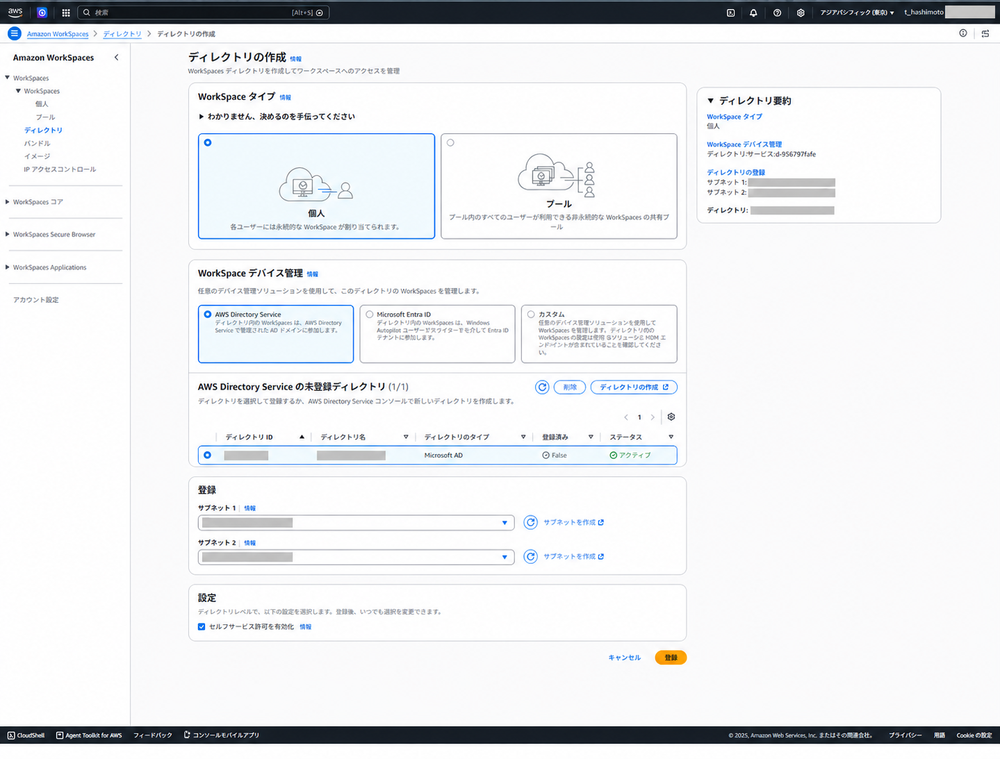
WorkSpaces Personalの作成
- Amazon WorkSpacesのナビゲーションから、WorkSpacesのプロビジョニングを開始
- WorkSpaceタイプで
個人を選択し、バンドル、実行モード、タグを設定 - 登録済みディレクトリを選択し、対象ユーザーを選択または作成
- 必要に応じて、暗号化、ルートボリューム、ユーザーボリュームをカスタマイズ
- 作成後、ステータスが
AVAILABLEになることを確認 - WorkSpacesクライアントまたはWeb Accessでサインイン
オプションと実行モード
個人向けの永続デスクトップとして作成し、利用者に合うバンドルを選択する
実行モードは、常時利用する端末ではAlwaysOn、利用時間に応じて課金を抑える場合はAutoStopを選択する
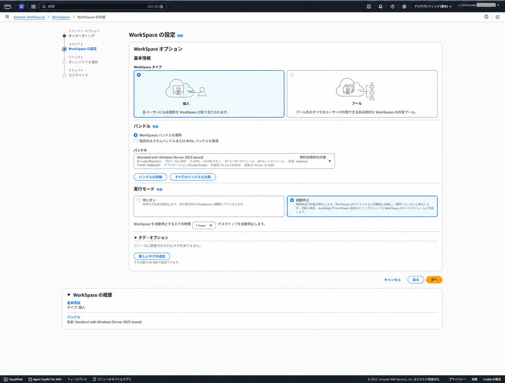
ディレクトリと利用者の選択
登録済みディレクトリからWorkSpaceを割り当てる利用者を選択する
AWS Managed Microsoft ADを利用する場合はWorkSpacesコンソールの作成フローから利用者を追加できる
通常アカウントだけを選択し、組み込みアカウントやサービスアカウントを選択していないことを確認する
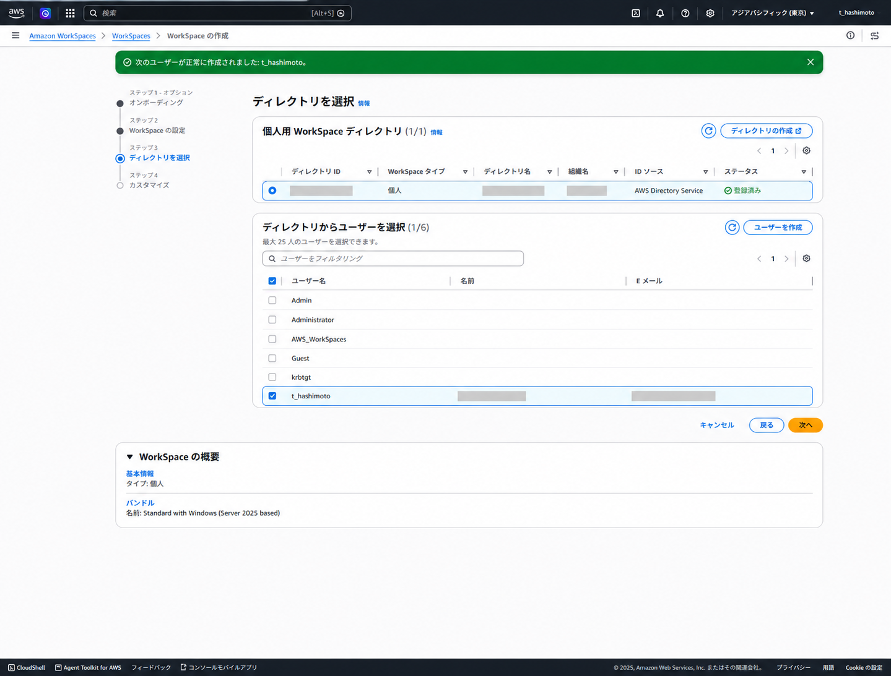
カスタマイズ
要件に応じて、ルートボリュームとユーザーボリュームの暗号化、容量、カスタムバンドルを設定する
後からカスタムイメージを作成する場合は、暗号化とイメージ運用の制約を事前に確認する
カスタムイメージを作成する予定があるWorkSpaceでは、ボリューム暗号化の扱いを事前に決定する
暗号化されたWorkSpaceからのイメージ作成はサポートされない
接続
WorkSpaceの作成完了後、利用者には初回接続用メールが届く
メールの個別リンクと登録コードは接続情報にあたるため、ドキュメントやチケットへ転載しない
利用者自身がメールからプロフィールと初期パスワードを設定する
- WorkSpaceのステータスが
AVAILABLEであることを確認 - 利用者が初回接続用メールからプロフィールと初期パスワードを設定
- Amazon WorkSpacesクライアントのダウンロードページから、利用端末に合うクライアントを導入
- クライアントへメール記載の登録コードを入力し、ディレクトリのユーザー名と設定済みパスワードでサインイン
DCV（WSP）ベースのWindowsまたはLinux WorkSpaceでWeb Accessを有効化すると、クライアントを導入せずに対応ブラウザから接続できる
Web Accessを有効化
Web Accessはディレクトリ単位で許可する
同じディレクトリへ登録したWorkSpaceに設定が適用されるため、対象利用者と接続元ネットワークへの影響を確認してから変更する
- Amazon WorkSpacesコンソールで
ディレクトリを開き、対象のディレクトリIDを選択 - ディレクトリ詳細の
他のプラットフォーム＞編集を選択 Web Accessを選択して保存- 対象WorkSpaceを再起動して設定を反映
- WorkSpacesクライアントページで
Webアクセスを選択し、登録コードとディレクトリ資格情報で接続
他のプラットフォームでWeb Accessを有効化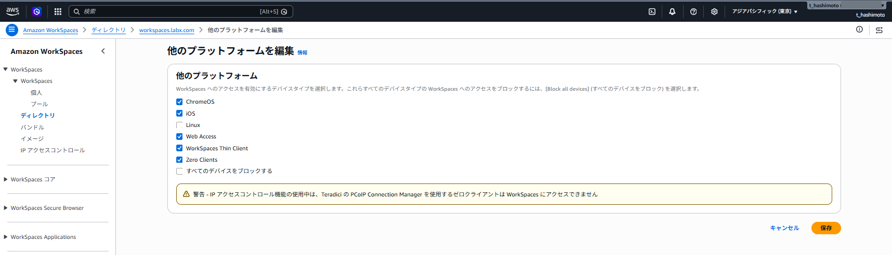
Web Accessに必要なアウトバウンド通信とポートを許可する
Windowsのログオンポリシーが合わない場合はログオン遅延や黒い画面が発生するため、GPOも合わせて確認する
Windowsのログオンポリシー
| 設定 | 値 | 目的 |
|---|---|---|
| Hide entry points for Fast User Switching | Disabled | WorkSpacesログオンエージェントが正しい利用者を選択できる状態にする |
| Interactive logon: Do not display last user name | Enabled | 前回利用者ではなく、接続ユーザーの資格情報を入力できる状態にする |
| Interactive logon: Do not require CTRL+ALT+DEL | Disabled | ログオン前にCTRL+ALT+DELを要求する |
| Interactive logon: Display user information when the session is locked | User display name, domain and user names | ロック画面にドメインとユーザー情報を表示する |
GPO変更後は、管理者のコマンドプロンプトでポリシーを更新し、WorkSpaceのセッションを再起動する
gpupdate /force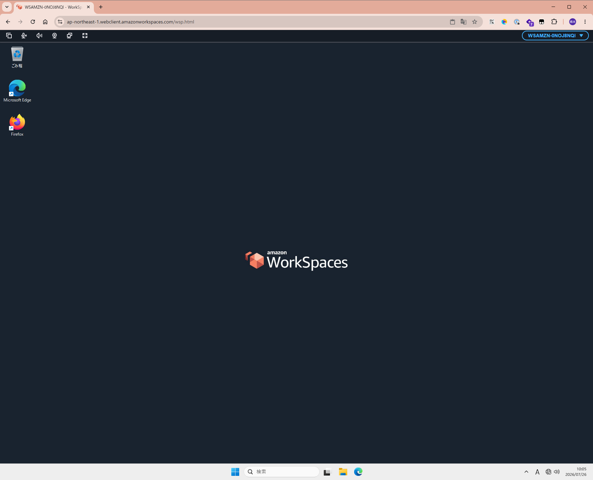
DCV（WSP）のWindows / Linux WorkSpaceは、Chrome、Edge、Safari、FirefoxからWeb Accessを利用できる
AD管理ツールとGPMC
WorkSpacesのコンピューターオブジェクト用とユーザーオブジェクト用に、別々のOUを作成する方法が推奨される
OUやGPOを管理するには、AD管理ツールとGroup Policy Management Console（GPMC）を導入したディレクトリ参加済みの管理端末を用意する
Install-WindowsFeatureはWindows ServerのServerManagerモジュールに含まれるコマンド
Windows 10/11ベースのWorkSpaceでは使用せず、RSATをWindowsの機能として追加する
Windows 10/11ベース
管理者としてWindows PowerShellを起動し、利用可能なRSAT機能を確認する
Get-WindowsCapability -Online |
Where-Object Name -match 'Rsat\.(ActiveDirectory|GroupPolicy)' |
Format-Table Name, StateAD DS/LDSツールを追加する
Add-WindowsCapability -Online -Name Rsat.ActiveDirectory.DS-LDS.Tools~~~~0.0.1.0GPMCを追加する
Add-WindowsCapability -Online -Name Rsat.GroupPolicy.Management.Tools~~~~0.0.1.0追加後の状態を確認する
Get-WindowsCapability -Online |
Where-Object Name -match 'Rsat\.(ActiveDirectory|GroupPolicy)' |
Format-Table Name, StateWindows Serverベース
管理者としてWindows PowerShellを起動し、ServerManagerの機能として導入する
Install-WindowsFeature -Name RSAT-ADDS,GPMC導入後はdsa.mscでActive Directory Users and Computers、gpmc.mscでGPMCを開く
AWS Managed Microsoft ADでは、ディレクトリ管理者のAdminで別のユーザーとして実行し、必要な権限で管理する
5台以上のWorkSpacesを運用する場合は、ディレクトリ参加済みのAmazon EC2 Windowsインスタンスへ管理ツールを集約する方法が推奨される
OU・ADユーザー管理
AdminでAD管理ツールを起動:
- スタートメニューから
Active Directory ユーザーとコンピューターを検索 - 検索結果を右クリックし、
別のユーザーとして実行を選択 - AWS Managed Microsoft ADのディレクトリ管理者
Adminの資格情報を入力 - Active Directory ユーザーとコンピューターを開き、管理対象のOUを確認
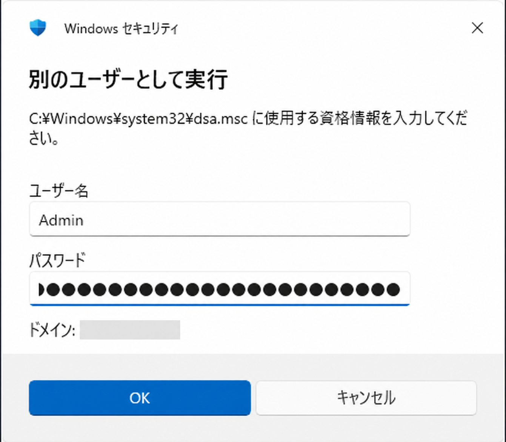
WorkSpaces用OUを作成:
WorkSpacesのコンピューターオブジェクトと利用者を分離して管理するため、専用の親OU配下にComputersとUsersを作成する
AWSが作成したAWS Reservedなどの定義済みOU、グループ、ユーザーは変更・削除しない
- Active Directory ユーザーとコンピューターで、AWS Managed Microsoft ADのドメインを展開
- 管理用の親OUを作成
- 親OUの配下に
ComputersとUsersを作成 - GPOは対象となるコンピューターOUまたはユーザーOUへリンクし、適用対象を分離
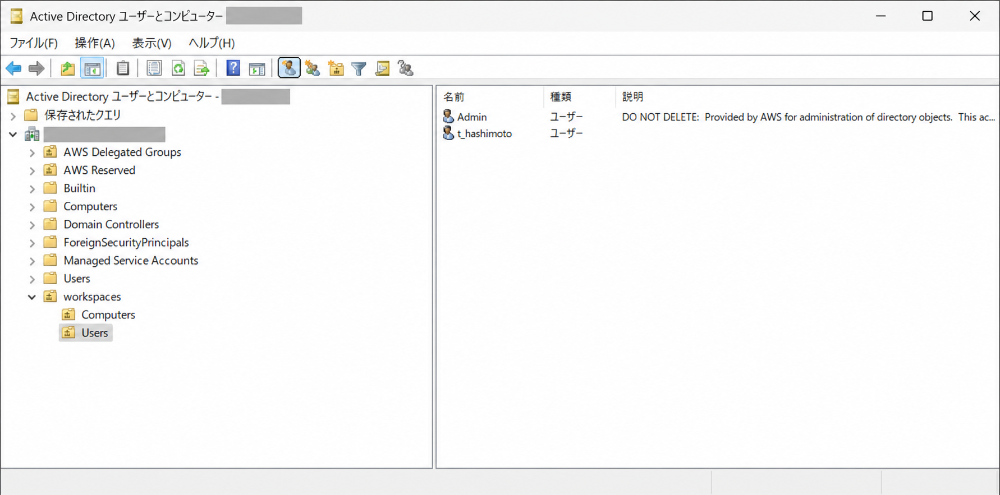
ADユーザーを作成:
利用者をAD側で管理する場合は、Users OUを選択して新規作成 ＞ ユーザーを選択する
姓名、表示名、ユーザーログオン名を入力し、作成後にWorkSpacesコンソールで対象利用者へWorkSpaceを割り当てる
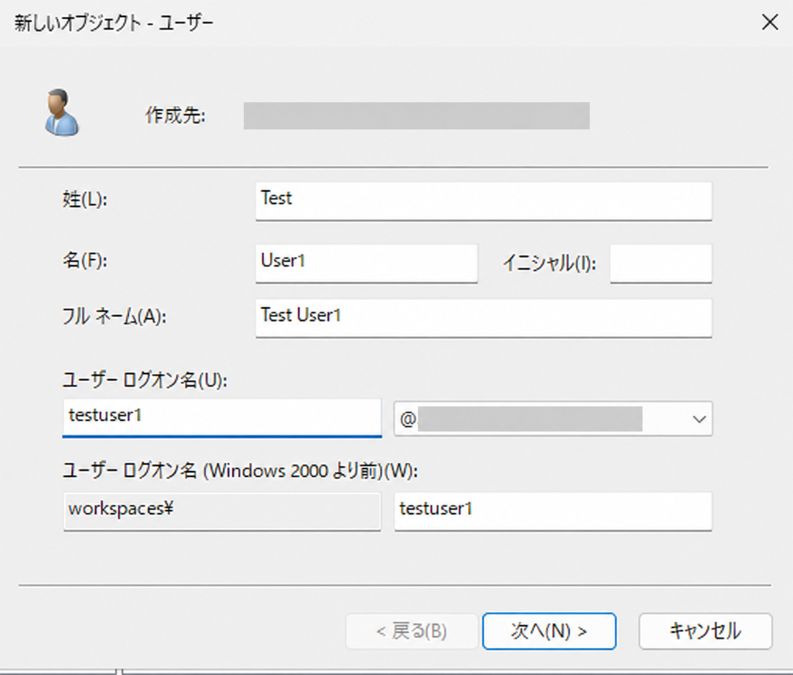
初回パスワードには一時パスワードを設定し、ユーザーは次回ログオン時にパスワード変更が必要を選択するパスワードを無期限にするとアカウントは無効は通常の利用者アカウントでは選択しない
アカウントを無効化して作成した場合は、WorkSpaceを割り当てる前に有効化する
WorkSpaces固有のグループポリシー
Windows WorkSpacesへプロトコル固有の設定を適用するには、使用中のプロトコルに対応する管理用テンプレートをActive Directoryの中央ストアへ配置する
新規環境はDCV用テンプレートを使用し、PCoIP用テンプレートは既存環境だけで使用する
| プロトコル | コピー元 | テンプレート | GPMCでの確認先 |
|---|---|---|---|
| DCV (WSP) | C:\Program Files\Amazon\WSP |
wsp.admxwsp.adml |
Computer Configuration → Policies → Administrative Templates → Amazon → DCV / WSP |
| PCoIP | C:\Program Files\Teradici\PCoIP Agent\configuration\policyDefinitions |
PCoIP.admxen-US\PCoIP.adml |
Computer Configuration → Policies → Administrative Templates → PCoIP Session Variables |
DCVテンプレートを中央ストアへ配置
- 実行中のDCV (WSP) Windows WorkSpaceで
C:\Program Files\Amazon\WSPを開き、wsp.admxとwsp.admlを取得 - エクスプローラーで
このPCを右クリックし、ネットワークドライブの割り当てを選択 - フォルダーへ
\\<domain-fqdn>\SYSVOLを入力し、別の認証情報を使用して接続するを選択 - AWS Managed Microsoft ADの
Admin資格情報を入力して接続 - 割り当てたドライブで
<domain-fqdn>\Policiesを開く PolicyDefinitionsが存在しない場合は作成し、wsp.admxをコピーPolicyDefinitions\en-USが存在しない場合は作成し、wsp.admlをコピーgpmc.mscを開き、WorkSpacesコンピューター用GPOから管理用テンプレートが表示されることを確認- 専用GPOをWorkSpacesのコンピューターOUへリンクし、
gpupdate /forceまたはWorkSpace再起動で反映
wsp.admxとwsp.admlはC:\Program Files\Amazon\WSPから取得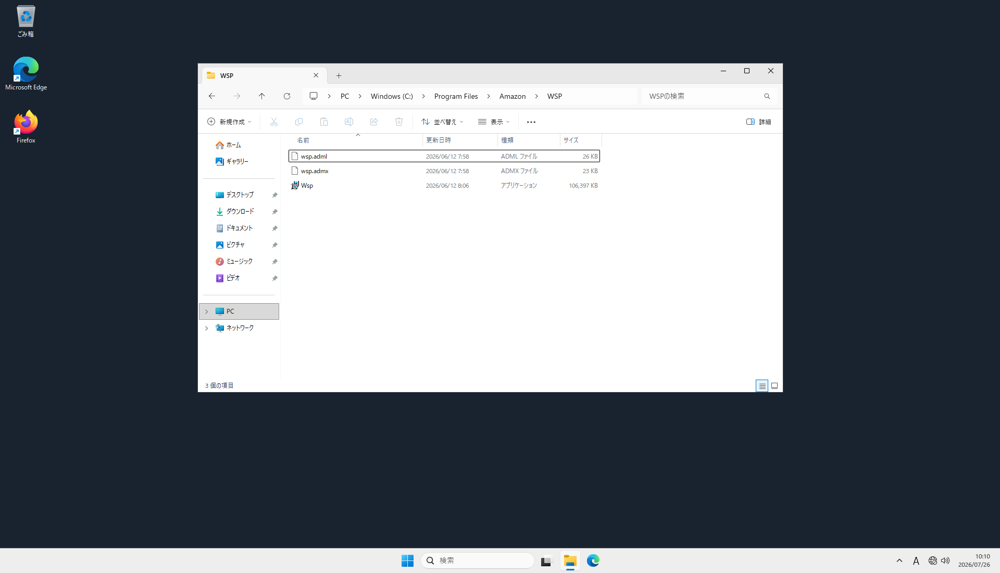
\\workspaces.labx.com\SYSVOLをネットワークドライブへ割り当て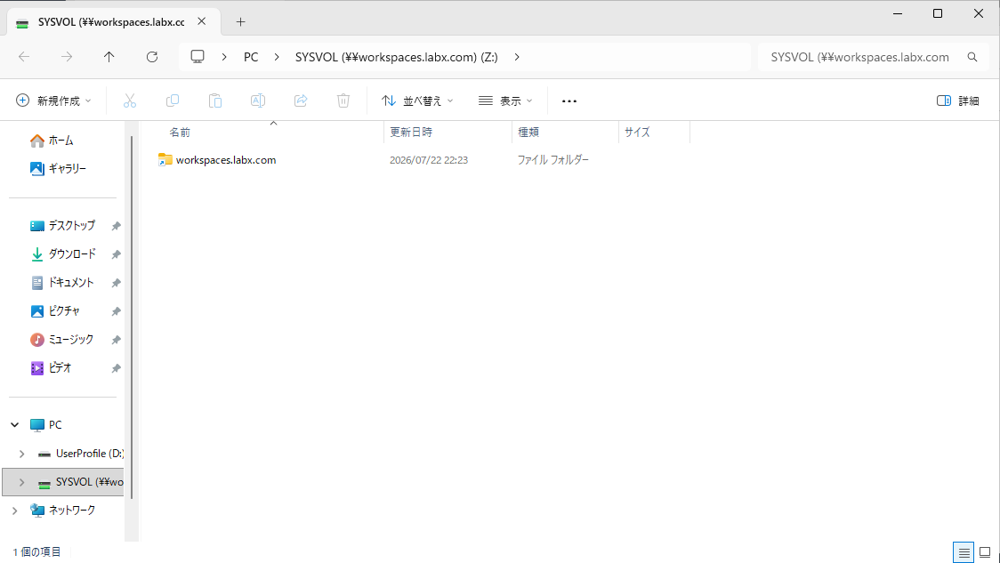
PolicyDefinitionsへwsp.admxを配置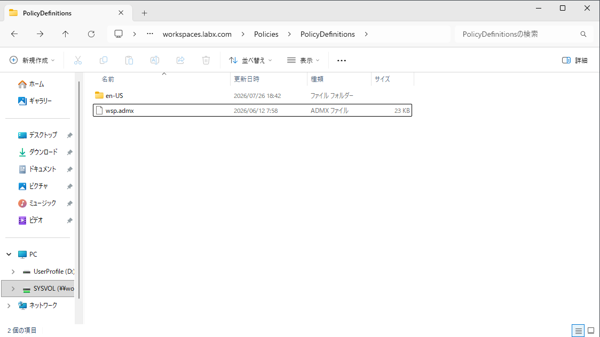
PolicyDefinitions\en-USへwsp.admlを配置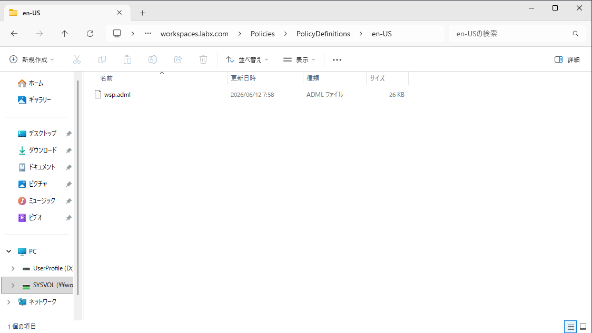
\\<domain-fqdn>\SYSVOL\<domain-fqdn>\Policies\PolicyDefinitionsにwsp.admx、その配下のen-USにwsp.admlがあれば配置完了workspaces.labx.comのようにドメイン名のドットを省略しない
admxとadmlのXML内容は編集しない
PCoIPテンプレートを使用する場合
既存PCoIP環境では、PCoIP Agentのビット数に合うテンプレートを取得し、同じ中央ストアへPCoIP.admxとPCoIP.admlを配置する
32ビットエージェントの場合、コピー元はC:\Program Files (x86)\Teradici\PCoIP Agent\configuration\policyDefinitionsとなる
復元・再構築・移行
復元、再構築、移行では、ルートボリュームとユーザーボリュームをどの状態から作り直すかが異なる
実行前にスナップショット時刻と消失するデータを確認し、利用者をログオフさせてから開始する
通常利用時の自動スナップショットは12時間ごとにスケジュールされる
WorkSpaceが正常な場合はルートボリュームとユーザーボリューム、異常な場合はユーザーボリュームだけが対象となる
作成時刻は固定ではないため、コンソールに表示される復元ポイントを確認する
| 操作 | 主な用途 | ルートボリューム Windows: C |
ユーザーボリューム Windows: D |
ネットワーク |
|---|---|---|---|---|
| 復元 | 正常だったスナップショット時点へ戻す | 指定したスナップショットへ戻る 以後のアプリケーションと設定変更は消失 |
同じ時点のスナップショットから再作成 現在の内容は上書き |
既存構成を維持 |
| 再構築 | OS破損や設定不良を解消し、作成元バンドルへ戻す | 作成元バンドルの最新イメージから再作成 追加アプリケーションと設定変更は消失 |
最新スナップショットから再作成 スナップショット以後の変更は消失 |
プライマリENIを再作成し、新しいプライベートIPを割り当て |
| 移行 | 別バンドル、OS、コンピューティング構成へ変更 | 移行先バンドルのイメージから再作成 Cドライブのデータは消失 |
最後のスナップショットから再作成 新しいユーザープロファイルを生成し、旧プロファイルは .NotMigratedへ変更 |
移行中に新しいIPアドレスを割り当て |
開いているファイルを保存し、Cドライブの必要データを外部へ退避する
Dドライブも最後のスナップショット以後の変更は失われるため、重要データをバックアップする
操作の選び方
- 復元: アプリケーションや設定を含め、直近の正常時点へ戻したい場合
- 再構築: ユーザーデータを直近スナップショットから戻し、OSを作成元バンドルの状態へ入れ直したい場合
- 移行: バンドルやOSを変更したい場合
プロトコルだけをPCoIPからDCVへ変える場合は移行ではなくプロトコルの変更を使用
コンソール操作
復元:
- 対象WorkSpaceを選択し、
アクション＞WorkSpaceの再構築 / 復元を選択 - 使用するスナップショットの日時を選択
- 影響を確認して
復元を選択
再構築:
- 対象WorkSpaceを選択し、
アクション＞WorkSpaceの再構築 / 復元を選択 - 使用するユーザーボリュームのスナップショット日時を確認
- 影響を確認して
再構築を選択
移行:
- 対象WorkSpaceを選択し、
アクション＞WorkSpaceの移行を選択 - 移行先バンドルと最後のスナップショット日時を確認
- 影響を確認して
WorkSpaceの移行を選択
PCoIPからDCV (WSP) へのプロトコル変更
PCoIPバンドルから作成したWindows WorkSpaceは、ルートボリュームを再作成せずにDCV（WSP）へ変更できる
対象のWorkSpaceがDCVのクライアント、ネットワーク、バンドル要件を満たすことを確認してから変更する
非本番WorkSpaceでクライアント、ネットワーク経路、印刷、周辺機器、アプリケーションを確認する
変更中は利用者が接続できないため、利用停止時間を設ける
コンソールで変更
- 対象WorkSpaceが
AVAILABLEまたはSTOPPEDで、プロトコルがPCoIPであることを確認 - WorkSpaceを選択し、
アクション＞プロトコルの変更を選択 - 変更を開始し、ステータスが
プロトコルを変更中になることを確認 - 最大40分待機し、ステータスが
使用可能、プロトコルがDCV (WSP)になったことを確認
<WORKSPACE_ID>はPCoIPで使用可能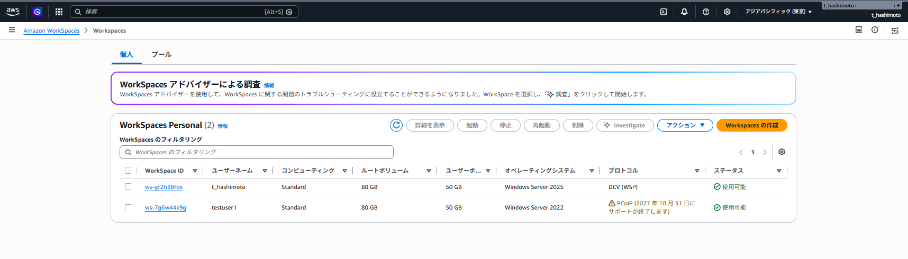
プロトコルを変更中になる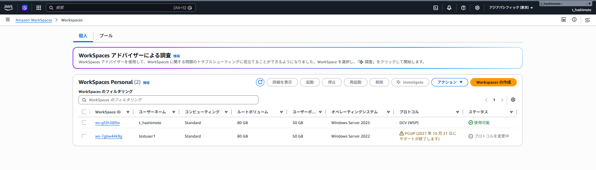
DCV (WSP)、ステータスが使用可能になったことを確認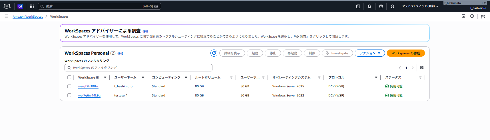
AWS CLIで変更
AWS CLIでもプロトコルを変更できる
対象WorkSpaceの状態とプロトコルを確認する
aws workspaces describe-workspaces \
--workspace-ids <WORKSPACE_ID> \
--query 'Workspaces[0].{WorkspaceId:WorkspaceId,State:State,BundleId:BundleId,Protocols:WorkspaceProperties.Protocols}' \
--output tableプロトコルをDCV（WSP）へ変更するProtocolsの値は大文字・小文字を区別する
aws workspaces modify-workspace-properties \
--workspace-id <WORKSPACE_ID> \
--workspace-properties "Protocols=[WSP]"最大40分待機し、変更後の状態を確認する
aws workspaces describe-workspaces \
--workspace-ids <WORKSPACE_ID> \
--query 'Workspaces[0].{WorkspaceId:WorkspaceId,State:State,Protocols:WorkspaceProperties.Protocols}' \
--output table